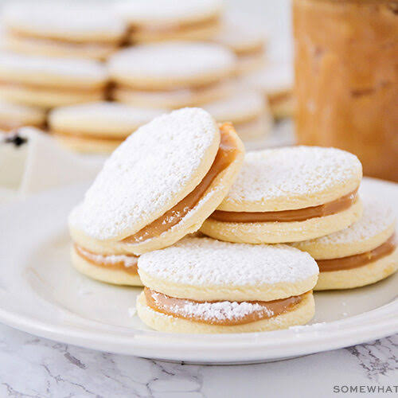

Alfajor

Alfajor is a traditional Argentine cookie made of two wafers filled with dulce de leche.
Ingredients:
- 2 cups of flour
- 1/2 cup of butter
- 1/2 cup of sugar
- 1 egg
- 1/2 cup of dulce de leche
Instructions:
- Preheat the oven to 350°F (175°C).
- Mix the flour, butter, and sugar to create the dough.
- Roll out the dough and cut into circles.
- Bake for 10-12 minutes or until golden brown.
- Fill each cookie with dulce de leche and press together.
Back to Home